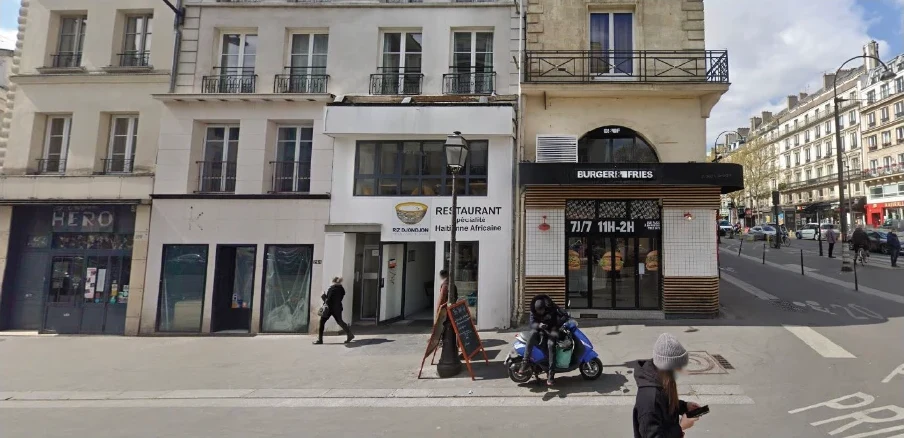
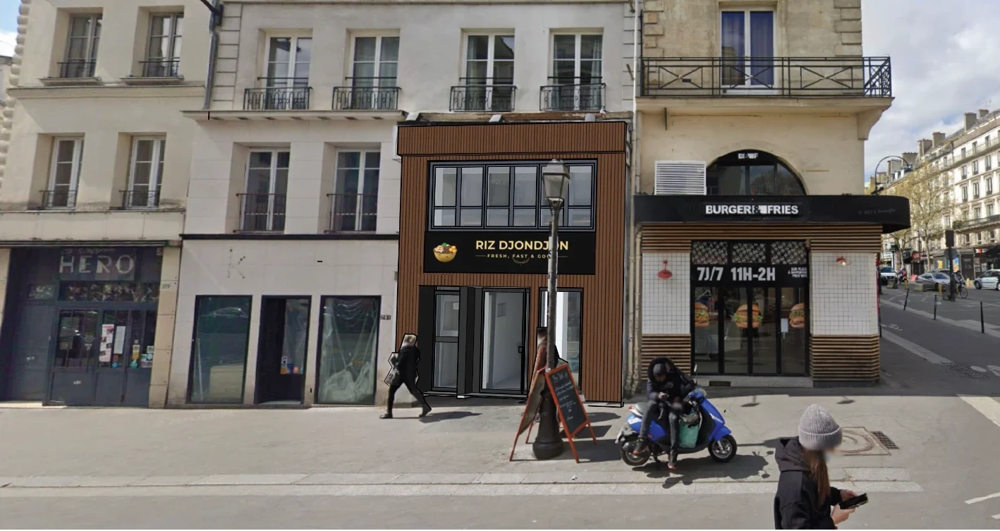

Réalisation · devanture commerciale
Une devanture qui change tout.
Restaurant Riz Djondjon : façade bois, nouvelle enseigne.
Avant / après
Même rue. Autre adresse.

AVANT

APRÈS · INSERTION PROJET
Les plans de façade
Existant / projet, cotés.
Façade existante · façade projet
Hauteurs, largeurs, entrées immeuble et restaurant : chaque élément est mesuré sur place puis dessiné.
Commerce · restaurant · enseigne
Une devanture, ça se déclare.
1
La façadeModifier une devanture : déclaration préalable.
2
L'enseigneSouvent une autorisation à part, selon la commune.
Étudier mon projet →
★ 5/5 AVIS GOOGLE · 300+ PROJETS · DEVIS SOUS 24 H
Réalisation · création de cave
Creuser une cave sous sa maison ?
Vue de la rue, rien ne change. Administrativement, tout change.
La coupe existant / projet
La coupe dit tout.
EXISTANT
PROJET · CAVE 2,18 M SOUS PLAFOND
Avant de creuser
3 choses à savoir.
1
Plus de 1,80 m sous plafondLa cave compte dans la surface de plancher.
2
Plus de 5 m² créésSur une maison existante : déclaration préalable au minimum.
3
Sous des murs existantsReprise en sous-œuvre : étude de structure indispensable.
Écrivez « CAVE » en DM →
Insertion graphique
L'image qui fait accepter un projet.
Le projet dans sa vraie rue, au milieu des vrais voisins.
PCMI6 · DP6
Une bonne insertion, c'est…
1
Le vrai décorUne photo de la rue, prise depuis l'espace public.
2
Le vrai projetÀ l'échelle, avec ses matériaux et ses couleurs.
3
Le bon regardLe point de vue d'un passant : ce que verront la mairie et les voisins.
Avant de déposer
Voir le projet avant le dépôt.
Envoyez-nous une photo de votre maison depuis la rue : on vous montre votre projet en place.
Étudier mon projet →
★ 5/5 AVIS GOOGLE · 300+ PROJETS · DEPUIS 2018